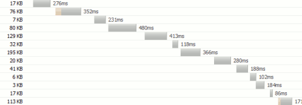
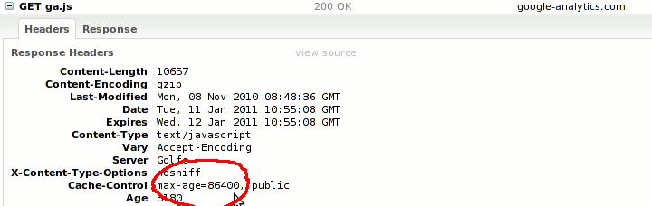

A tiny script that simplifies, speeds up, and modernizes your site
Load scripts and css on demand.
Achieve responsive design with CSS that targets different screen reolutions, paths, states and browsers.
Detect various browsers and their features.
Target HTML5 and CSS3 safely.
Make it the only script in your HEAD.
A concise solution to universal issues.
« the theory »
Highlights
JavaScript Loader
Load scripts in parallel but execute in order.
No WEB 2.0 site would work without all the nice scripts we are injecting into our pages today.
Head JS loads JavaScript files in parallel like images without blocking the page. Your
page will be faster. Even with a single combined file.
JavaScript Organizer
You’ve read the books and placed SCRIPTSRC tags on the bottom. Good. But can
you do this?
// use jQuery on the body of the page even though it is not included yet head.ready(function(){ $("#my").jquery_plugin(); });
// load jQuery whenever you wish bottom of the page head.js("/path/to/jquery.js");
JavaScript
Responsive Design / Media Queries
You've heard of Responsive Design, Media Queries & Mobile First. But how do you actually go about and put it into application without having to resort to some kind of mobile framework ?
Design your pages for 1980px resolution, then make them work on a 10”
tablet, a laptop or even a mobile phone. Viewport is the single most important thing when developing for mobile clients.
/* screen size less than 1024 pixels */ .lt-1024#hero{background-image:(medium.jpg);}
/* fine tune for mobile phone */ .lt-640#hero{background-image:(small.jpg);}
CSS
Or you migh need to apply a different layout when a page passes from Landscape to Portrait mode.
Landscape
/* page in lanscape mode */ .landscape#hero{width:800px;}
CSS
Portrait
/* page in portrait mode */ .portrait#hero{width:300px;}
CSS
If you resize the browser your CSS rules will dynamically follow. Head
JS does this behind the scenes.
Look at it like Media Queries, except that it works in browsers that don't even support Media Queries.
Head JS provides you with the following detections: .lt, .gt, .lte, .gte, .eq, .landscape, .portrait, .desktop, .mobile
CSS Router
Target CSS for specific paths and pages
/CSS targeted for home page only / #index-page.root-section{
}
/ make sidebar visible under /plugins / .plugins-section#sidebar{display:block;}
CSS
Browser Detection / Graceful Degradation
All browsers are detected but we all love IE.
/ older than IE9/ .lt-ie9.box{padding:10px;}
/CSS fixes for IE6/ .ie6ul{list-style:none;}
CSS
It’s generally wiser to use feature detection IE is a feature in itself.
Dynamic CSS
Style for various application states:
<script> /* detect whether user is logged in. here we check for an existence of a cookie */ head.feature("logged",mycookielib.get_cookie("auth_token")); </script>
<style> / .. and write CSS accordingly / .logged#login-box{display:none;} </style>
HTML
Whenever you call head.feature() your CSS rules will follow.
CSS3 Feature Detection
HeadJS adds classes to the HTML root element so that you can do this
/ target CSS for browsers without box-shadow support / .no-boxshadow.box{ border:2pxsolid#ddd; }
CSS
The focus is on CSS3 styling and it’s easy to add more tests. Minimalism is
a must. It’s your HEAD again.
JavaScript Feature Detection
Every feature can also be found on the head (default) JavaScript variable.
if(head.logged){ // do things }
JavaScript
HTML5 Enabler
DIV is good but HeadJS let’s you be semantic and futuristic.
<style> article{text-shadow:001px#ccc;} </style>
<!-- works in IE too --> <article> <header></header> <section></section> <footer></footer> </article>
HTML
Theory
Script Loader
With Head JS your scripts load like images - completely separated from the
page rendering process. The page is ready sooner. Always. This is guaranteed
even with a single combined JavaScript file. See it yourself:
Non-blocking loading is the key to fast pages. Moreover Head JS loads scripts
in parallel no matter how many of them and what the browser is. The speed
difference can be dramatic especially on the initial page load when the
scripts are not yet in cache. It’s your crucial first impression.
Pages no longer “hang” and there is less or zero “flashing” between pages.
User only cares when the page is ready. Unfortunately current networking tools
don’t highlight this crucial point. They focus on the overall loading of
assets instead.
Head JS can make your pages load 100% or even 400% faster. It can make the
largest impact on client side optimization.
All these scripts block the page. The page needs to wait for these to be
loaded until it starts rendering itself. This is how majority of web sites are
done. There is not a large difference whether the script tags are placed
on top or on bottom of the page. On both cases the scripts must be loaded
first. Compare it yourself.
With older generation browsers the scripts will be loaded sequentially. Here
is a screenshot from Firefox 3.0.

It’s easy to understand that this is poison for performance. The single best
optimization technique for script loading is to use a non-blocking and
paraller script loader such as Head JS.
Combining scripts
There is a common misbelief that a single combined script performs best. Wrong:
latest browsers and Head JS can load scripts in parallel. loading 3 parts
in parallel instead of as a single chunk is usually faster.
if an individual file is changed the whole combination changes and you
lose the benefits of caching. It’s better to combine only the stable files
that doesn’t change often.
many popular libraries are hosted on CDN. you should take the advantage of
it instead of hosting yourself.
iPhone 3.x cannot cache files
larger than 15kb and in iPhone 4 the limit is 25kb. And this is
the size before gzipping. if you care about iPhones you should respect
these limits.
With Head JS the file amount is not as critical as it is with SCRIPTSRC
because page rendering is not blocked. Combining scripts is an important
optimization method but you can go too far with it.
Page styling and CSS
Stylesheets needs to be
on top. An
included script in the HEAD is the only place where a script is executed
before the stylesheets are loaded and where it can give a helping hand for the
CSS developer. Head JS takes this important role seriously and gives you
following possibilities:
use the latest CSS3 techniques and provide alternate CSS for IE and other
old school browsers
safely use HTML5 tags even with IE
target CSS for specific screen widths, browsers and URLs
style your pages differently depending on the application state, such as
whether user is logged or not.
Essentially Head JS adds CSS class names to the <html> element. If you
attempt to do this in a script that is loaded with Head JS you can see a
“Flash of Unstyled Content” (FOUC) effect: the page is first rendered without
the to-be-loaded style definitions and then re-rendered when the scripts are
executed. This is why the CSS feature detection is a core part of Head JS.
A script in HEAD blocks so it must be small. This is the essence of Head JS.
It weights only 2.5 kb when minified and gzipped. It’s preferred to load the
file from a CDN. Google: I’m staring at
You! (please
give it a star)
Note: As crazy as it sounds FUBC and FOUC are not my acronyms.
Usage
Script loading and execution
All script loading is done with head.js()
// the most simple case. load and execute single script without blocking. head.js("/path/to/file.js");
// load a script and execute a function after it has been loaded head.js("/path/to/file.js",function(){
});
// load files in parallel but execute them in sequence head.js("file1.js","file2.js",..."fileN.js");
// execute function after all scripts have been loaded head.js("file1.js","file2.js",function(){
});
// files are loaded in parallel and executed in order they arrive head.js("file1.js"); head.js("file2.js"); head.js("file3.js");
// the previous can also be written as head.js("file1.js").js("file1.js").js("file3.js");
JavaScript
DOM Ready
With head.js() call your page can be ready before your scripts. You need to
prepare for that
The “DOM ready” event such as $(document).ready() is already fired when
the scripts arrive. If the loaded scripts depend on that event make sure
your library can handle this. jQuery 1.4+ works.
If your scripts modify the page you can see a “flash of unbehaviored
content” effect (FUBC): a quick glimpse of unmodified HTML before the
loaded scripts act on it. You can avoid this by initially hiding the
modifiable elements before your scripts make them visible and do their job.
document.write() statements are not supported since it’s hard or
impossible to know where to write to. It’s a bad programming habit anyway
so it’s likely that Head JS will never support this.
Enable Caching
Make sure that the files loaded with head.js can be cached. For example:

This Google Analytics script will be served from browser’s cache after the
initial load. A proper max-age header configuration on the web server does the
trick. If you care about performance this is a good habit for every JavaScript
file. Not only with head.js.
Internally Head JS uses browser’s cache to preload scripts before they are
executed. This trick is used on Chrome, Safari and IE. Without caching enabled
a file will be loaded twice on the initial load. There are no issues on
Firefox and Opera because they execute files on the order they are
programmatically inserted on the page.
Script Organization
Call a function after all scripts have been loaded and the document iscriptable:
head.ready(function(){
});
JavaScript
The functions supplied this way are executed in the same order as they are given.
// call a function after a particular file has been loaded head.ready("file2.js",function(){
});
JavaScript
This makes sense if you have large script files and want to execute JavaScript
before all files are loaded. Otherwise you simply use head.ready() which
gets executed after all files are loaded.
// a handy shortcut for head.ready() head(function(){
});
JavaScript
Labeling Scripts
By assigning labels the content developers need not to know the actual file paths.
// call a function immediately after jQuery Tools is loaded head.ready("tools",function(){
// setup Tooltips $(".tip").tooltip();
});
// load scripts by assigning a label for them head.js( {jquery:"http://ajax.googleapis.com/ajax/libs/jquery/1.8.2/jquery.min.js"}, {tools:"http://cnd.jquerytools.org/1.2.5/tiny/jquery.tools.min"}, {heavy:"http://a.heavy.library/we/dont/want/to/wait/for.js"},
// label is optional "http://can.be.mixed/with/unlabeled/files.js" );
JavaScript
If label is not given then the file name without the path is used as the key.
On the jQuery library above this would be just “jquery.min.js”.
Responsive Design / Media Queries
Target CSS for various screen sizes. For example
/ styling for screens with resolution less than 1024 pixels / .lt-1024#hero{background-image:(medium.jpg);}
/ styling for small mobile screens / .lt-640#hero{background-image:(small.jpg);}
CSS
Today most sites are optimized for 1024px but with Head JS you can safely
optimize for larger screens. Start by designing to the largest screen and then
add CSS rules for smaller ones. You can freely decide the sizes you optimize
for and the amount of them. By default Head JS watches following screen widths:
Say you are on a page: http://mydomain.com/addons/node/router.html.
Following CSS selectors apply:
.addons-section{}
.addons-node-section{}
#router-page{}
CSS
For each given path you get CSS classes representing “folders” and an ID
representing the page. The deeper your URL the more classes you’ll get An
empty page is “#index-page” and the site root is “.root-section”. NOTE: If you
have an existing id assigned for the HTML element it will be overwritten. On
this case you can place the id attribute for the BODY tag.
You can change the these suffixes with head_conf variable.
varhead_conf={section:'-area',page:''};
JavaScript
Now the selectors are:
.addons-area{}
.addons-node-area{}
#router{}
CSS
CSS3 Feature Detection
When a particular feature is supported a corresponding class name is added to
the <html> element. When a feature is not supported the class name is
prefixed with no-. For example:
.borderimage.box{ / style for browsers that support border images / }
.no-borderimage.box{ / style for browsers that does not support border images / }
CSS
On everyday CSS work you assume that a feature exists and code your CSS
accordingly and you later add support for older browsers with the aid of “no-“ classes.
CSS3 property list
Natively detected CSS3 properties
borderimage define an image to be used instead of the normal border of an element
Versions 3 - 10 are covered. It is best to avoid browser detection if you are
able to do feature detection. Sometimes it’s not possible especially when it
comes to IE.
HTML5 Enabler
Head JS adds HTML5 support for all browsers:
<style> article{text-shadow:001px#ccc;} </style>
<!-- works in IE too --> <article> <header></header> <section></section> <footer></footer> </article>
The truth is the stories you hear about HTML5 are greatly over-exaggerated. If you're really interested in the good, the bad & the ugly about HTML5, i strongly urge you to read The Truth about HTML5
API
Method index
head.js(file1 … fileN, [callback])
Immediately loads given javascript files and and executes them in the order
they are supplied. if the last argument is a function it is called after all
files are loaded and executed. Each file is either a string representing
relative or absolute path of a JavaScript file.
Alternatively each file can be given as an object taking a form: { label:
file_path }. The labels are a handy way to hide the actual file path from the
content writers. See the ready method below.
head.ready(callback)
Executes the given callback after all JavaScript files have been loaded and
the document is scriptable (DOM is ready).
head.ready(path_or_label, callback)
Execute the callback immediately after the given file or label is loaded and executed
head(callback), head(path_or_label, callback)
A convenience shortcut for head.ready
head.ready(document, callback)
Executes the given callback when document is ready. This is identical to
jQuery’s .ready() method. document is
a global variable representing the current document in a browser.
head.feature(name, flag)
Enable or disable a feature. features are stored as a class name to <html>
element and on global head variable. if the flag arguments evaluates to
true a feature is enabled. Call this method in your HEAD before the
stylesheets are loaded.
Configuration
HeadJS is configured with a global head_conf variable before the script is
loaded. For example:
There is no way to detect if script loading failed in IE. For that reason a
feature such as head.error() is impossible to implement. When a script URL
cannot be accessed Head JS is silent.
Future
Head JS is rapidly being adopted by a large number of websites all the time. A
quick Twitter search reveals that it’s
becoming a core client side development tool for many. The strategy is to keep Head JS
as minimalistic as possible.